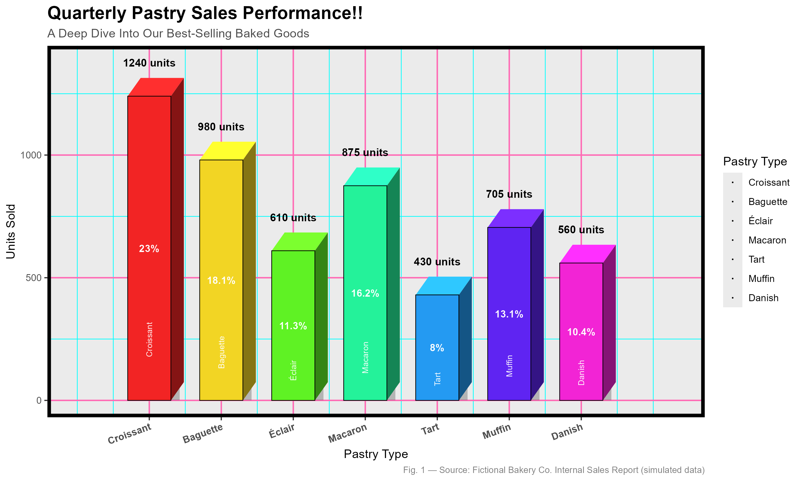
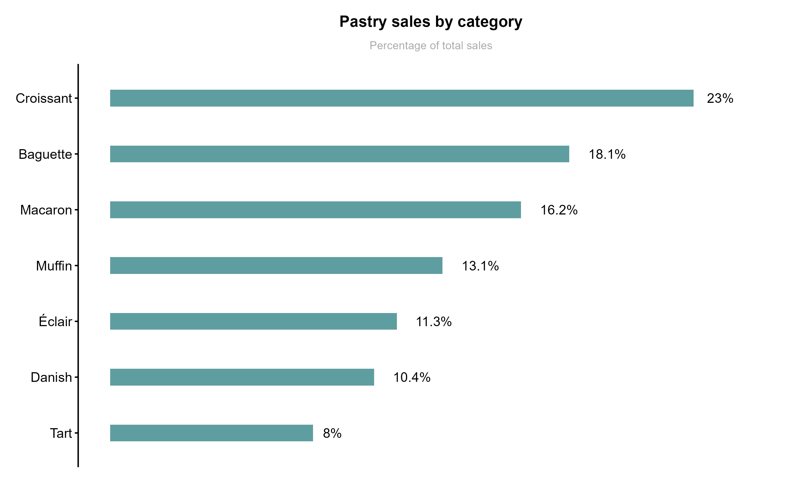
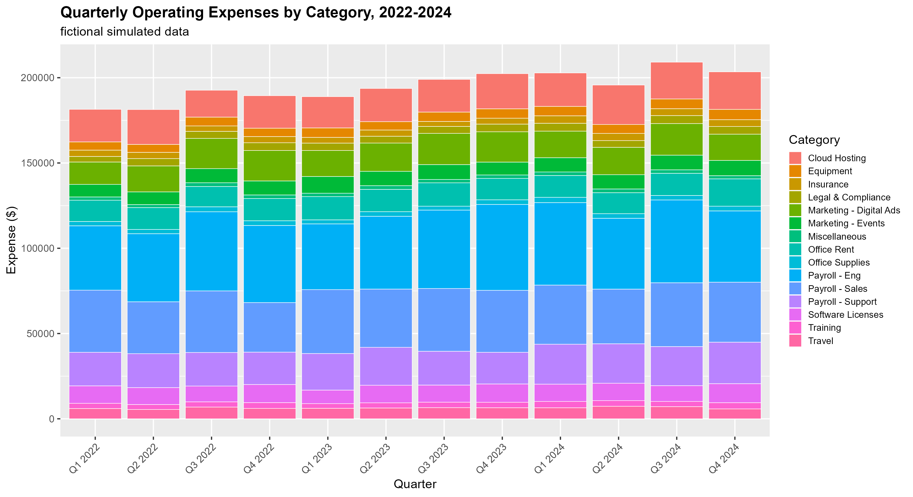
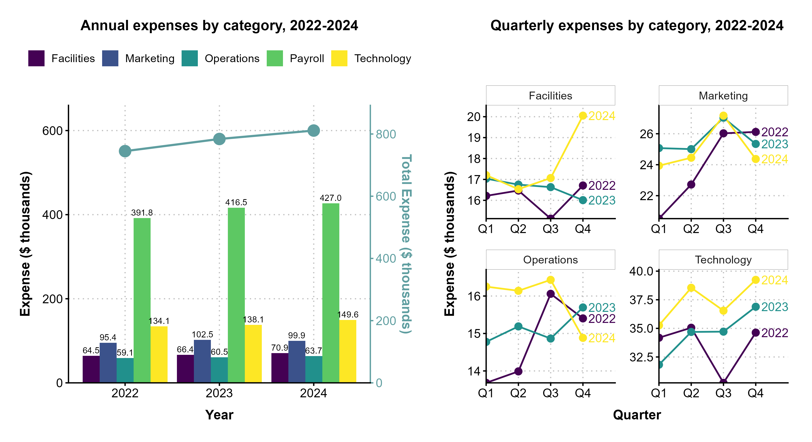
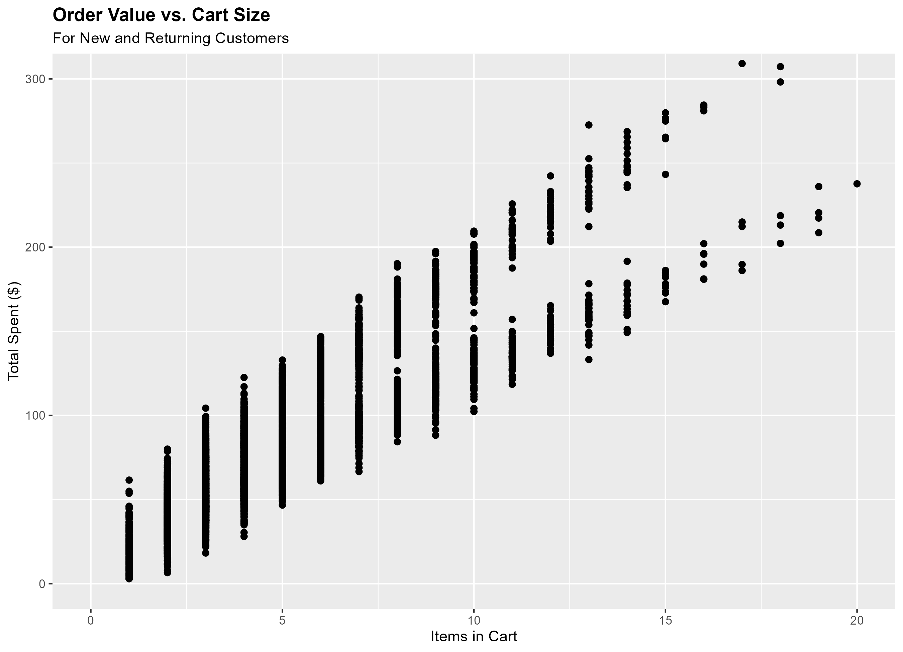
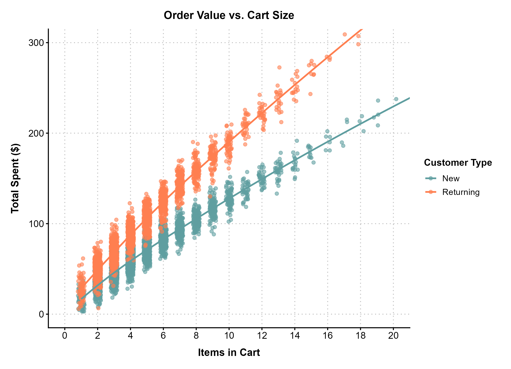

Complex to clear: Redesigning data visualisations
Concept & Approach
- The goal of this project is to show how a simple and intentional redesign can improve the clarity and effectiveness of data visualisations.
- In order to not misjudge or judge unfairly any real reports, all examples below are built from fictional, simulated data inspired by patterns that show up constantly in real reports.
- Tools: R and ggplot2
Design philosophy
- Complexity in the data is not an excuse for complexity in its visualisation.
- Every redesign choice below is justified first by what it does for the reader and then by aesthetics.
- Simplifying is not an enemy: Simplifying a visualisation helps the reader focus on the most important information instead of getting lost in numerous details.
- Every visualisation should support one conclusion, otherwise it leads to unnecessary complexity and confusion for the reader.
01 - The overdesigned chart


Slide to the right to reveal the redesign.
Redesign choices
- Focused the chart on each category's share of the total sales.
- Removed unnecessary decorative elements to reduce visual clutter:
> 3D effects that actually reduce the readability of the data
> Colour that doesn't actually encode any new information
> Coloured grid that distracts from the data - Removed duplicate information such as the redundant legend and labels.
- Exchanged the axes so that the categories are on the vertical axis and the sales share is on the horizontal axis, making it easier to read the category names.
- Re-ordered the categories in descending order of their sales share to highlight the most important categories.
02 - The overloaded chart


Slide to the right to reveal the redesign.
Redesign choices
- Grouped the expenses into broader categories to make the chart easier to follow.
- Split the initial chart into two separate ones that answer different questions:
"How do expense categories compare to each other and what's the annual trend?" and "How does each category's expenses change by quarter?" - Used clearer titles, labels on the data itself and a simpler visual hierarchy to direct attention to the main conclusion.
- Used a simpler, more minimal theme to reduce visual clutter and focus attention on the data.
- Used a professional colour palette to enhance readability, accessibility and visual appeal.
03 - The overplotted chart


Slide to the right to reveal the redesign.
Redesign choices
- Lowered the opacity of the points and added horizontal jitter to make it easier to inspect their number.
- Colour-coded the points according to the customer type in order to reveal the underlying pattern. Added trend lines to better illustrate them.
- Increased the x axis breaks to make it easier to inspect the number of items in each cart.
- Used a simpler, more minimal theme to reduce visual clutter and focus attention on the data.
- Used a colour combination that is accessible and visually appealing.